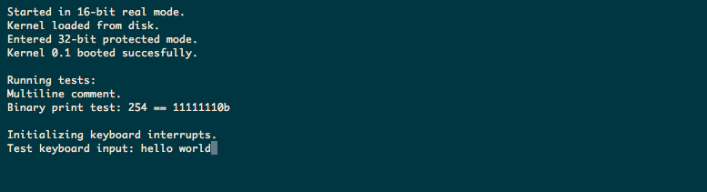

I'm a DevOps software engineer looking for new, strictly development roles in software. Let me tell you about myself. I first learned computer programming at age 15 in a high school Java class. This course took us from "Hello, World" to creating multi-threaded chat programs and 3D video games (with JMonkey) in a school year's time. The next summer, I interned at University of Michigan's Department of Material Science and Engineering. Here I learned Matlab and IDL and helped develop novel methods of visualizing multi-dimensional data. After this I primarily used code as a means for solving math problems. One of my proudest moments in high school was turning in a single page of answers stapled to printed Java code that I wrote to solve the lengthy Calculus assignment solving definite integrals via the trapezoidal rule.
In college I continued to shift my focus towards Physics and Math. While I took a handful of programming classes, most of my computer science education fell in the intersection of the discipline with math, e.g. Discrete Mathematics or Numerical Analysis. While I still loved programming, it wasn't until graduating that I began to take a a keen interest in how the giant suite of technology that drives our lives actually works. While I worked in a Cosmology lab at the University of Minnesota Physics Dept., alongside studying for the physics GRE, I began to dive into computer science fundamentals that my education did not cover. While I had a solid foundation in algorithms and data structures, I focused on learning the technology stack, specifications, and computer architecture that modern software is based on.
During this time I experimented with a broad range of technology. I learned about functional programming - employing type theory with Haskell and s-expressions with Scheme. I wrote MVC web applications with backends employing Python and Postgresql, and dynamic Javascript frontends. What stuck with me was a desire to burrow deeper into the foundations of these applications. Ultimately I really liked learning about operating systems and their implementations. I dove into the internals of Linux device drivers and C compilers. I learned the nuances of Makefiles and submitted Eudyptula Challenge tasks. I forayed into microcontroller and embedded domain by hacking on an STM32f4 Discovery board. I also found that focusing on this low-level domain greatly strengthened my comprehension of every level of abstraction above it.
Ultimately I found that I was most invested in the creative and technical outlet of building software. Instead of applying to graduate school I applied to software engineering positions and got a great offer in DevOps at Thomson Reuters. This position allowed me to leverage my historical experience with Java and my interest in the Linux ecosystem, while teaching me so much more about software development. While the administrational domain skills I've learned from this position are valuable in any development role, especially "Full-stack", I'm interested in shifting into a position that allows me to more explicitely develop applications. I've outlined some of my particular interests but I can (and want to) dive into any domain.
Please check out my resume for a summary of my skills and experience.
Kernel project: At this point - more of a bootloader project, this helped me grasp how the giant conglomerate of computer code we use sparks up seemingly ex nihilo. Understanding the early stages of operating systems helped me understand the motivations and origins of the rest of its components. It was also my firt time writing x86 assembly - here is code I wrote to print the hex representation of a number:
print_hex:
pusha
mov bx, HEX_OUT
add bx, 0x2
hexloop:
mov al, [bx]
cmp al, 0x0
je hexend ;go print the loaded string
mov al, dh
shr al, 0x4
and al, 0xf
cmp al, 0xa
jge gten
add al, 0x30
jmp cont
gten:
add al, 0x57
cont:
mov [bx], byte al
shl dx, 0x4
add bx, 0x1
jmp hexloop
I did go further than just booting, though. Writing some string utilities and even a keyboard driver utilizing IRQs (as opposed to polling). My aim is to flesh out basic string and debugging libraries then begin working on a memory allocation system. Here it is booting in qemu:
Other kernel hacking: I've been able to explore and compile code into established and educational kernel code-bases like Linux, and xv6, a Unix V6 clone for x86 written at MIT.
Linker: To me, linking felt like a less-covered part of computer programming that I needed a stronger understanding of. So I started this project to explore the internals of linking. It exists now as a subset of readelf, processing an elf file. Once this portion of the project is complete I'll be able to read utilize elf sections in linking code. Some example code - I used unions to succinctly copy file contents into representative structs :
union symbol_u {
uint8_t byte_arr[sizeof(struct symbol)];
struct symbol sym_struct;
};
rustZ80: This was a fun project I started to learn more about the Z80 and CPU operation generally while also learning the Rust language. The emulator process is actually at face-value simple - consisting of a loop and switch statement for each op code:
match op {
//NOP
0x00 => (),
//LD A, n
0x3E => {
self.reg_a = self.mem[(self.reg_pc) as usize];
self.reg_pc += 1;
Qubit: I actually wrote this project around the time I was studying for the Physics GRE. It explores representing qubit operations in Haskell. Implementing a tensor product:
tensor :: State -> State -> State
tensor k0 k1 = transpose [[(*)] <*> concat k0 <*> concat k1]
Open source: Lately I've been more interested in contributing to larger open projects. While working on my own is benificial, as a self-learner I've begun to feel the need for more feedback, especially in domains that are not part of my employment. So I've been familiarizing myself with some popular codebases that I use and hacking on them in my free time.
Last month I submitted my first real PR to the CLI JSON parser jq, "like sed for json", written in C. I received positive feedback and discussion about where to take the changes, which I'm currently implementing as I have time.